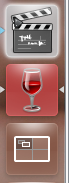
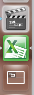
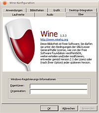
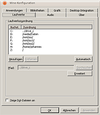
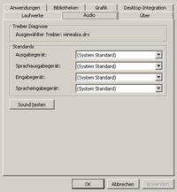
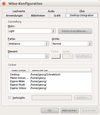

Wine
Dieser Artikel wurde für die folgenden Ubuntu-Versionen getestet:
Ubuntu 16.04 Xenial Xerus
Ubuntu 14.04 Trusty Tahr
Zum Verständnis dieses Artikels sind folgende Seiten hilfreich:
 Wine (Wine Is Not an Emulator) ist ein Programm, mit dem man Windows-Software unter Linux laufen lassen kann. Man benötigt keine Windows-Installation auf seinem Computer, um mit Wine Programme starten zu können, die für Windows programmiert wurden.
Wine (Wine Is Not an Emulator) ist ein Programm, mit dem man Windows-Software unter Linux laufen lassen kann. Man benötigt keine Windows-Installation auf seinem Computer, um mit Wine Programme starten zu können, die für Windows programmiert wurden.
Wie gut funktioniert Wine?¶
Programme, die noch aus der Windows-95/98-Ära stammen, aber auch viele Programme für Windows 2000 und XP, funktionieren meistens prächtig. Je neuer und komplexer das Programm ist, desto wahrscheinlicher sind Probleme. Es funktionieren viele Spiele (siehe auch PlayOnLinux), insbesondere solche, die ältere DirectX-Versionen oder gar OpenGL nutzen. Die Entwicklung schreitet zur Zeit sehr schnell voran. Mit einer aktuellen Version sind viele Spiele und Programme ohne Probleme nutzbar, die noch vor wenigen Wochen nicht oder nur mit Tricks (z.B. Microsoft-DLLs) liefen.
Je nach Windows-Programm, das mit Hilfe von Wine ausgeführt wird, ist der Anspruch an die Ressourcen (primär CPU-Leistung und verfügbarer RAM) sehr moderat bis sehr hoch. Leider kann hier keine pauschale Aussage getroffen werden, welches Programm "flüssig" läuft und welches nicht.
Wie gut Wine für die eigenen Zwecke funktionieren müsste, kann man vor dem Testen durch Stöbern in der WineHQ-Datenbank  herausfinden.
herausfinden.
Windows-Programme, die man zwar mit Wine lauffähig machen kann, aber die außer der normalen Installation noch viele besondere Wine-Einstellungen oder -Erweiterungen benötigen, installiert man in einer separaten Wine-Umgebung, um andere Windows-Programme nicht zu beeinträchtigen. Dies gilt insbesondere für viele Spiele.
Installation¶
Fertige Pakete¶
Will man ein vorkompiliertes Paket von Wine installieren, kann man immer noch entscheiden, welche Quelle man nutzt. In den Ubuntu-Quellen liegt eine bei Einführung der jeweiligen Ubuntu-Version aktuelle, möglicherweise gepatchte, Wineversion. Gelegentlich gibt es auch neuere Versionen in den offiziellen Backports. In den Quellen des Wine-Projektes findet sich dagegen immer die aktuellste, ungepatchte Version. Einerseits bringt diese oft entscheidende Verbesserungen, andererseits handelt es sich um Entwicklerversionen, die immer auch neue Fehler und Kompatibilitätsbrüche enthalten können. Zur Zeit wird alle zwei Wochen eine neue Version veröffentlicht. Bei der Wahl kann man keine generelle Empfehlung geben, da je nach Anwendungsziel eine andere Version mehr oder weniger Kompatibilität bietet.
Methode 1 - Offizielle Paketquellen¶
Es muss lediglich das folgende Paket installiert [1] werden:
wine (universe)
 mit apturl
mit apturl
Paketliste zum Kopieren:
sudo apt-get install wine
sudo aptitude install wine
Ab Ubuntu 16.10:
wine-stable (universe)
mit apturl
Paketliste zum Kopieren:
sudo apt-get install wine-stable
sudo aptitude install wine-stable
Methode 2 - Wine-PPA¶
WineHQ hostet fortan sein PPA auf dem eigenen Server.
Die nachfolgenden Befehle laden die Schlüsseldatei herunter und fügen sie und das PPA in das System ein. Mit dem 2. Abschnitt werden die Paketlisten aktualisiert und wine installiert.
Achtung!
Zusätzliche Fremdquellen können das System gefährden.
wget https://dl.winehq.org/wine-builds/Release.key sudo apt-key add Release.key sudo apt-add-repository 'https://dl.winehq.org/wine-builds/ubuntu/' sudo apt-get update sudo apt-get install wine-stable winehq-stable
Das Paket winetricks ist in diesem PPA nicht enthalten. Die Version in den Quellen (universe) ist von 2014 und somit veraltet. Deshalb empfiehlt es sich, winetricks anschließend noch über die alternative Installation hinzuzufügen.
Methode 3 - Manuell gewähltes Paket¶
Aktuelle Wine-Versionen brechen mit den in ihnen enthaltenen Neuerungen regelmäßig die Kompatibilität zu Programmen, die mit einer vorigen Version schon liefen. Aus diesem Grund kann es sinnvoll sein, eine ältere Version zu nutzen. Auf der Archiv-Seite von WineHQ findet man eine umfassende Sammlung vorkompilierter Pakete. Das gewünschte Paket herunterladen und installieren [5].
Es ist auch möglich, einige neueren Versionen zu installieren, indem man das unter Methode 2 angegebene PPA benutzt. Die Auswahl der über die Fremdquelle installierbaren Versionen wird ständig erweitert und kann mit folgendem Befehl eingesehen werden:
apt-cache policy winehq-devel
Hinweis!
Fremdpakete können das System gefährden.
Kompilieren¶
Fortgeschrittene Benutzer möchten Wine unter Umständen an die Besonderheiten ihres Systems anpassen und zu diesem Zweck Wine aus dem Quellcode kompilieren. Das genaue Vorgehen ist im Artikel Wine/Kompilieren beschrieben.
mögliche Fehlermeldung¶
Beim Installieren von wine auf einem frischen Ubuntu-64-bit-System kommt es zu der Fehlermeldung
... Hängt ab von: wine1.6-i386 (= 1:1.6.2-0ubuntu14) ist aber nicht installierbar ...
Das zeigt an, daß hier die i386-Architektur noch nicht installiert wurde. Dieses kann z.B. mit
sudo dpkg --add-architecture i386
nachgeholt werden. Dabei das übliche Prozedere
sudo apt-get update && apt-get dist-upgrade
nicht vergessen.
Benutzung¶
Windows-Programme starten¶
Achtung!
Wine sollte grundsätzlich niemals als Root oder mit Root-Rechten über sudo aufgerufen werden! Siehe Wine-FAQ 6.2.
Es gibt drei korrekte Möglichkeiten, ein Programm mit Wine zu starten. Um Fehler zu vermeiden, sollte Wine das Arbeitsverzeichnis des Programms mitgeteilt werden (siehe auch Wine/Problembehebung):
Absolute Pfade¶
Mithilfe des start-Befehls kann man einen absoluten Pfad zur EXE-Datei angeben und damit automatisch deren Verzeichnis als Arbeitsverzeichnis festlegen:
Mit Unix-Pfad:
wine start /Unix "/Absoluter/Pfad/zur/Datei.exe"
Mit Windows-Pfad:
wine start 'C:\Absoluter\Pfad\zur\Datei.exe'
Relative Pfade¶
Dasjenige Verzeichnis, aus dem heraus man Wine startet, wird als Arbeitsverzeichnis gesetzt. Bei einem Programmstart im Terminal wechselt man daher zunächst in das Programmverzeichnis und ruft das Programm erst dann mit der sich darin befindenden EXE-Datei auf:
cd "/Pfad/zum/Programmverzeichnis" wine Datei.exe
Für Programmstarter empfehlen sich dagegen absolute Pfade oder die Verwendung des Path-Schlüssels.
Path-Schlüssel in Programmstartern¶
Natürlich kann man Windows-Programme auch mithilfe eines Programmstarters in Menüs oder in den Suchfeldern der verschiedenen Desktop-Umgebungen starten. Ein vollständiges Beispiel für Wine findet sich weiter unten im Abschnitt .desktop-Dateien erstellen.
Diese Programmstarter in Form von .desktop-Dateien können das Arbeitsverzeichnis (ohne umrahmende Anführungsstriche) mithilfe des Path-Schlüssels angeben und dann in der Exec-Zeile auch ohne start-Befehl einen absoluten Pfad benutzen. Hier ein Ausschnitt einer .desktop-Datei:
Exec=wine "/Absoluter/Pfad/zur/Datei.exe" Path=/Pfad zum Programmverzeichnis/
Wineprefix¶
Windows-Programme, die besondere Wine-Einstellungen erfordern, um vernünftig zu funktionieren, sollten in einer eigenen unabhängigen Wine-Umgebung installiert werden.
Anlegen¶
Diese Umgebung wird automatisch in einem beliebigen Verzeichnis erstellt, sobald man dieses Verzeichnis einem Wine-Befehl mitteilt. Das Verzeichnis sollte, muss sich aber nicht im persönlichen Verzeichnis oder im versteckten Wine-Verzeichnis befinden. Dafür definiert man einfach die Umgebungsvariable WINEPREFIX und benutzt anschließend den Wine-Befehl. Ein Beispiel: [2]
env WINEPREFIX="$HOME/.wine/Programm" wine start /Unix "/media/Programm-CD/Programm.exe"
Für Programme, die in einem Wineprefix installiert werden, legt Wine automatisch Programmstarter an, die dem Startbefehl die WINEPREFIX-Variable voranstellen. Doch wer einen eigenen Programmstarter erstellen oder das Programm im Terminal starten möchte, muss dies natürlich selber tun. Vergisst man dies, wird das Programm in der standardmäßigen Wine-Umgebung in ~/.wine und mit allen ihren Einstellungen gestartet, was genau das Verhalten und genau die Fehler produziert, die man mit dem Wineprefix gerade vermeiden möchte.
Auch Wine-Hilfsprogramme wie winecfg oder winetricks müssen im Wineprefix desjenigen Programmes benutzt werden, das man mit winetricks bearbeiten möchte:
env WINEPREFIX="$HOME/.wine/Programm" winetricks
Entfernen¶
Das Verzeichnis einer Wine-Umgebung kann bedenkenlos entfernt werden. Dabei gehen jedoch auch alle darin installierten Windows-Programme verloren.
Übrig bleiben jedoch alle Dateien außerhalb dieser Wine-Umgebung, nämlich Menüeinträge und Programmstarter, die einzeln in den Verzeichnissen ~/.config/menus/applications-merged/ bzw. ~/.local/share/applications/wine ausfindig gemacht und entfernt werden müssen.
Windows-Programme deinstallieren¶
Automatisch¶
Man kann den in Wine integrierten Uninstaller nutzen, der ganz ähnlich zu seinem Windows-Pendant arbeitet. Dazu öffnet man ein Terminal [2] und gibt folgenden Befehl ein:
wine uninstaller
Alternativ kann man das Deinstallationsprogramm der jeweiligen Anwendung nutzen. Dieses befindet sich meist im jeweiligen Programmordner.
Manuell¶
Das jeweilige Programm einfach zu löschen ist nicht die eleganteste Methode, doch leider funktioniert die Deinstallation unter Wine nicht immer, oder es bleiben trotz Deinstallationsprogramm Menüeinträge und Programmstarter zurück. Diese entfernt man einzeln aus den Verzeichnissen ~/.config/menus/applications-merged/ bzw. ~/.local/share/applications/wine.
Rückstände in der Registrierung kann man z.B. manuell mit dem Wine-Registrierungseditor oder mit Werkzeugen wie regcleaner  bereinigen.
bereinigen.
Wine erweitern¶
Das Grundgerüst von Wine kann durch das Skript winetricks sehr einfach erweitert werden. Es lädt benötigte Laufzeit-Bibliotheken und Fonts und installiert diese automatisch.
MSI installieren¶
Um MSI-Programmdateien (.msi) zu installieren gibt man Folgendes ein:
msiexec /i Programmname.msi
Batch-Datei aufrufen¶
Um eine Windows-Batch-Datei auszuführen, kann man so vorgehen:
wineconsole cmd
Nun sollte sich eine Windows-Konsole öffnen. Zuerst navigiert man in dieser Konsole in den Ordner, der die Batch-Datei beinhaltet, und führt diese anschließend aus. Das ganze könnte dann so aussehen:
cd Pfad\zum\Programmverzeichnis\ Programm.bat
.desktop-Datei erstellen¶
  Wenn eine Windows-Anwendung mit Wine installiert wird, dann erscheint unter Unity statt des Programmsymbols das allgemeine Symbol von Wine (siehe Abbildungen rechts). Um eigene Startsymbole für Wine Anwendungen zu vergeben, muss der Programmstarter (eine Datei der Form Programmname.desktop) anpasst werden. Wurde ein solcher Starter bei der Installation des Programmes automatisch erstellt, ist er im Programme- oder auch Programs-Ordner im Verzeichnis ~/.local/share/applications/wine/ zu finden. Fehlt eine solche Datei bzw. sollen individuelle Starter angelegt werden, kann dies von Hand erfolgen. Dazu entweder eine Datei über einen Editor anlegen, oder einen bereits vorhandenen Starter im Dateimanager kopieren und mit einem Texteditor [3] bearbeiten. Ein Beispiel:
[Desktop Entry] Encoding=UTF-8 Name=Name des Programms Comment=Beschreibung der Fähigkeiten Type=Application Exec=wine start 'C:\\Pfad\\zum\\Programm.exe' Icon=/home/user/Pfad/zum/Icon.ico StartupWMClass=Programm.exe Categories=Game
Bitte daran denken, in .desktop-Dateien doppelte Backslashes für Windows-Pfade zu benutzen.
Die Datei wird mit der Endung .desktop an einem der zuvor genannten Orte gespeichert.
Der Eintrag "StartupWMClass=..." ist sehr wichtig. Denn .desktop-Dateien, die diesen Eintrag besitzen, werden mit dem entsprechenden Symbol angezeigt. Bei PlayOnLinux werden .desktop-Dateien zwar automatisch erstellt, doch fehlt diesen Dateien der Eintrag. Durch das Hinzufügen der Zeile wird dieser kleine Fehler korrigiert.
Genauere Informationen zum Anlegen von Programmstartern gibt der Artikel .desktop-Dateien.
Dateien über das Kontextmenü öffnen¶
Um in einem Dateimanager eine Datei mit einem Windows-Programm zu öffnen, z.B. eine Textdatei mit Notepad, wird ein Programmstarter mit einem angepassten Programmbefehl benötigt. winepath -w wandelt den Pfad der im Dateimanager ausgewählten Datei in einen Windows-Pfad um, mit dem das Windows-Programm arbeiten kann. xargs reicht diesen Pfad korrekt an das Windows-Programm weiter.
Das folgende Beispiel zeigt eine angepasste Exec-Zeile eines solchen speziellen Programmstarter (bitte Pfade und Kategorie entsprechend anpassen). Bitte daran denken, in .desktop-Dateien doppelte Backslashes für Windows-Pfade zu benutzen. Das Zeichen vor und nach dem winepath-Teil des Befehls ist kein Anführungszeichen, sondern ein Accent grave.
Exec=wine start 'C:\\Pfad\\zum\\Programm.exe' `winepath -w %f`
Sollte die die Backticks-Notation aus dem vorigen Beispiel nicht funktionieren, sollte man folgende Alternative ausprobieren:
Exec=/usr/bin/env sh -c "winepath -w -0 %F | xargs -0 wine start 'C:\\Pfad\\zum\\Programm.exe'"
Genauere Informationen zum Anlegen von Programmstartern gibt der Artikel .desktop-Dateien.
Konfiguration¶
Wine bringt von Haus aus ein kleines Konfigurationswerkzeug mit, das sich mit dem folgenden Befehl [2] ausführen lässt:
winecfg
Wer ein Wineprefix verwendet, muss dem Befehl natürlich wie beschrieben die WINEPREFIX-Variable voranstellen.
Der sich nun öffnende Dialog sollte so oder ähnlich aussehen:

Man muss nicht zwingend etwas einstellen.  "OK" speichert die Grundeinstellungen im versteckten Ordner ~/.wine.
"OK" speichert die Grundeinstellungen im versteckten Ordner ~/.wine.
Laufwerke¶
Laufwerk C:¶
Hier kann überprüft werden, ob der Laufwerksbuchstabe C: auf ../drive_c verweist.
Achtung!
C: darf nicht auf ein Laufwerk mit einem vorhandenen Windows (z.B. /media/sda1) verweisen! Dadurch wird die Windows-Partition überschrieben und kann nur durch aufwändige Reparaturen oder eine Neuinstallation wieder nutzbar gemacht werden.
CD-ROM-Laufwerk einrichten¶
Wenn eine CD oder DVD eingelegt und eingehängt ist, erkennt Wine sie und legt automatisch ein Laufwerk D: mit dem entsprechenden Pfad an. Man kann Wine aber natürlich auch ein anderes Laufwerk zuweisen. Um ein CD-ROM-Laufwerk einzurichten, zunächst auf "Laufwerke" klicken. Anschließend sieht der Dialog so aus: 
Hier auf "Hinzufügen" klicken, dann wird in der Liste der Laufwerke automatisch ein neues Laufwerk D: eingerichtet werden. Für dieses Laufwerk muss der absolute Pfad des Verzeichnisses angegeben werden, in welchem es in das Dateisystem eingehängt ist. Ubuntu legt automatisch ein solches Verzeichnis im Ordner /media an, wenn eine CD oder DVD ins Laufwerk eingelegt wird, also könnte der absolute Pfad z.B. für die Spiel-CD von Morrowind /media/MORROWIND lauten. Der Pfad unterscheidet sich demnach von CD zu CD.
Man kann das Laufwerk natürlich auch immer in einem festen Verzeichnis wie z.B. /media/cdrom einhängen. Dafür trägt man es in die /etc/fstab ein. In diesem Fall trägt man das gleiche Verzeichnis auch im Wine-Konfigurationseditor für das Laufwerk D: ein, also z.B. /media/cdrom.
Anschließend folgt ein Klick auf "Zeige Erweitert". Hier muss noch ausgewählt werden, dass es sich um ein CD-ROM-Laufwerk handeln soll.
Das CD-ROM-Laufwerk ist nun für Windows-Anwendungen als solches sichtbar. Mit einem Klick auf "Anwenden" werden die Änderungen übernommen.
Audio¶
Um den Sound zu testen, wählt man oben den Registerreiter "Audio". Möchte man ein anderes Audio-Treiber-Backend benutzen, muss man den Dialog jedoch zunächst schließen.

Wine benutzt standardmäßig bereits das ALSA-Backend, das im Allgemeinen am zuverlässigsten funktioniert. Wer jedoch noch eine alte Wine-Konfiguration mit dem mittlerweile obsoleten Winepulse-Backend benutzt oder spezielle Ansprüche hegt, kann das Backend auf zwei Weisen wechseln. Die folgenden Beispiele beziehen sich auf die Umstellung auf das ALSA-Backend.
Am einfachsten erreicht man dies mit winetricks:
winetricks sound=alsa
Genauso gut kann man jedoch im Registrierungseditor den Schlüssel "HKEY_CURRENT_USER / Software / Wine / Drivers" anlegen, falls er nicht schon existiert, und dort eine Zeichenfolge namens "Audio" mit dem Wert "alsa" erstellen bzw. sie mit diesem Wert überschreiben. Dann muss der Editor wieder geschlossen werden.
Welchen Weg man auch wählt: Nun kann im Wine-Konfigurationsdialog winecfg unter dem Reiter "Audio" geprüft werden, ob "winealsa.drv" als Treiber ausgewählt ist und der Sound funktioniert. Für andere Backends als ALSA gelten analoge Anweisungen.
Kommt es im Windows-Programm zu Problemen mit dem Sound, muss man ein wenig experimentieren. Je nach verwendeter Audio-Hardware können die Einstellungen hier sehr verschieden ausfallen.
OSS kann bei manchen Spielen und/oder bei manchen Soundkarten bessere Ergebnisse liefern. Wer nahezu latenzfreie Soundausgabe benötigt (wie bei Multiplayer-Shootern), sollte Jack installieren und als Treiber wählen.
Siehe auch Einführung in das Linux-Sound-System.
Anwendungen¶
Der Eintrag "Standardeinstellungen" gilt für alle mit Wine gestarteten Applikationen, die nicht explizit in den Anwendungen eingetragen ist. Ist dieser Eintrag ausgewählt, wirken sich alle Einstellungen in den Reitern, Audio/Grafik/Bibliotheken auf diese Standardeinstellungen aus.
Hat eine Windows-Anwendung Probleme, die durch Änderung der Konfiguration in Audio/Grafik/Bibliotheken behoben werden können, so sollte man diese Anwendung explizit hinzufügen (Button "Anw. hinzufügen"). Ist diese neue Anwendung ausgewählt, können nun Einstellungen in Audio/Grafik/Bibliotheken vorgenommen werden, die sich nur auf diese Anwendung auswirken.
Grafik¶
Manche Anwendungen starten nur, wenn "Emuliere einen virtuellen Bildschirm" ausgewählt ist. Darunter gibt man die gewünschte Auflösung an. Alternativ kann es auch ausreichen, die Desktopauflösung vor dem Start der Anwendung anzupassen.
Bibliotheken¶
Manche Anwendungen starten/funktionieren nur, wenn bestimmte Bibliotheken von "native (Windows)" auf "builtin (Wine)" geändert oder komplett deaktiviert werden. Dazu wählt man die Bibliothek im Auswahlfeld "Neu Überschreibung für" aus, drückt "Hinzufügen". Dadurch wird diese in die Liste "Bestehende" aufgenommen. Dort wählt man sie aus und drückt "Bearbeiten", um Änderung vorzunehmen.
Registry¶
Um die Wine-Registry einzusehen oder zu bearbeiten, gibt man folgenden Befehl ins Terminal [2] ein:
regedit
Wer ein Wineprefix verwendet, muss dem Befehl natürlich wie beschrieben die WINEPREFIX-Variable voranstellen.
Es öffnet sich nun der Registrierungseditor, der seinem Windows-Pendant entspricht.
Farben anpassen¶
Es gibt zwei Möglichkeiten, das Design von unter Wine laufenden Programmen anzupassen. Die erste (optisch schön; allerdings kann der PC dadurch langsamer werden) ist, dass man ein Windows-Design mittels winecfg einstellt. Dazu benötigt man ein passendes Design. Dieses erhält man z.B. von deviantART . Das passendste Design heißt Ubuntu Light for Windows XP . Einfach die Datei herunterladen und mit Wine aktivieren. Danach sehen die Programme mehr nach Ubuntu aus.
|  |
| Ubuntu Light for Windows XP |
Die zweite Methode ist zwar nicht die schönste, aber die optimale, um das Layout zu ändern. Man stellt die Farben für die Wine-Umgebung selbst ein. Dies erreicht entweder über winecfg, in dem man es von Hand macht oder einfach die folgende Anpassung verwendet. Dazu einfach den unten stehenden Code in eine neue Datei mit dem Namen ubuntu.reg einfügen:
REGEDIT4 [HKEY_CURRENT_USER\Control Panel\Colors] "ActiveBorder"="239 235 230" "ActiveTitle"="200 130 60" "AppWorkSpace"="102 51 51" "Background"="0 128 128" "ButtonAlternateFace"="180 180 180" "ButtonDkShadow"="115 106 96" "ButtonFace"="239 235 230" "ButtonHilight"="239 235 230" "ButtonLight"="248 246 244" "ButtonShadow"="203 193 183" "ButtonText"="0 0 0" "GradientActiveTitle"="16 132 208" "GradientactiveTitle"="181 181 181" "GrayText"="203 193 183" "Hilight"="248 198 119" "HilightText"="0 0 0" "HotTrackingColor"="0 0 255" "InactiveBorder"="239 235 230" "InactiveTitle"="239 235 230" "InactiveTitleText"="60 60 60" "InfoText"="0 0 0" "InfoWindow"="255 255 225" "Menu"="239 235 230" "MenuBar"="239 235 230" "MenuHilight"="0 0 0" "MenuText"="0 0 0" "Scrollbar"="239 235 230" "TitleText"="255 255 255" "Window"="255 255 255" "WindowFrame"="0 0 0" "WindowText"="0 0 0"
und folgenden Befehl ausführen:
regedit ubuntu.reg
Die Farben sind für Ubuntu optimiert.
Problembehebung¶
Eine unvollständige Sammlung bekannter Fehler und Lösungen bietet der Artikel Wine/Problembehebung.
Deinstallation¶
Wine selbst lässt sich problemlos über die jeweilige Paketverwaltung deinstallieren. Die installierten Windows-Programme bleiben jedoch erhalten. Möchte man auch diese entfernen, löscht man einfach das versteckte Verzeichnis ~/.wine/ (Standardordner).
In jedem Fall bleiben Menüeinträge und Programmstarter zurück. Mit folgenden Terminal-Befehlen [2] werden alle von Wine im Homeverzeichnis angelegten Menüeinträge und Programmstarter gelöscht:
rm -f ~/.config/menus/applications-merged/wine* rm -f ~/.local/share/applications/wine*
Links¶
WineHQ
- offizielle Seite der Wine-Entwickler WineHQs Wiki
- DokumentationWine für Ubuntu und Ubuntu-Varianten
- InstallationWineHQs Wine Application Database
- Was läuft und was läuft nicht mit Wine?
PlayOnLinux - erleichtert die Installationen und ermöglicht, mehrere Wine-Versionen nebeneinander zu betreiben
CrossOver - kommerzielle Wine-Version
Transgaming
- Webseite der Cedega/Cider-Macher Cedega-Games
- Was läuft mit Cedega und was läuft nicht? GameTree Linux Wiki
- Anleitungen und vieles mehr
- Erstellt mit Inyoka
-
 2004 – 2017 ubuntuusers.de • Einige Rechte vorbehalten
2004 – 2017 ubuntuusers.de • Einige Rechte vorbehalten
Lizenz • Kontakt • Datenschutz • Impressum • Serverstatus -
Serverhousing gespendet von